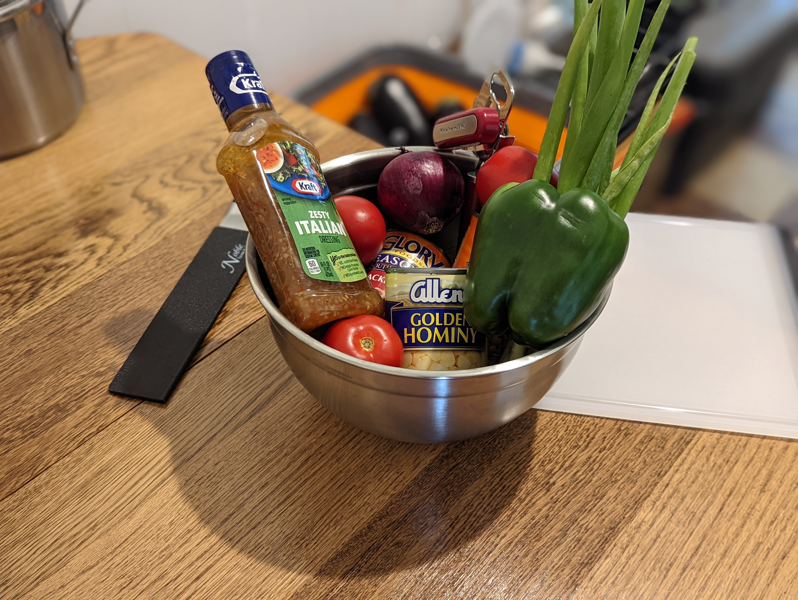

Texas Caviar

Description
A hearty recipe that's easy to prepare and served as an appetizer or even a topping for chips and cheese
Ingredients
- 1/2 cup onion
- 2 medium tomatoes
- 1 green pepper
- 2 cloves of garlic
- 4 green onions
- 2 cans (14 ounces) black eyed peas
- 1 can (14 ounces) hominy
- 1 bottle (8 ounces) Italian dressing
- 1 chopped jalapeno pepper
- 3 to 4 bags of blue corn chips
Steps
- Chop the onion, green pepper, green onion, and jalapeno pepper.
- Discard the jalapeno pepper seeds or leave some in for an extra kick.
- Mince the garlic.
- Drain the chopped tomatoes and the cans of black eyed peas and hominy.
- Combine all ingredients except the corn chips in a large bowl.
- Let chill for about 30 minutes.
- Serve with spoon and corn chips on the side.